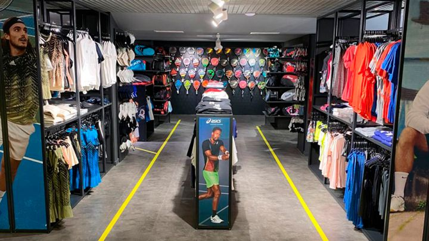

"Todo el equipo y entrenamiento con los mejores profesionales"
Hoy un importante espectro del mundo del tenis prefiere sus productos. La tienda representa en Chile a marcas de primer nivel, con una amplia gama de raquetas, bolsos y zapatillas. Contamos con un servicio increíble, variedad de precios, buena calidad de productos y trabajadores, te sientes como en tu casa.
El tenis es un deporte que requiere de mucha técnica y de un entrenamiento especializado. Nuestra rama te ofrece diferentes tipos de entrenamiento de acuerdo a tu nivel y expectativa. Además, los socios de la Rama de tenis tienen la posibilidad de hacer uso de las canchas en forma recreativa y en horarios de alta demanda. TeniSport cuenta con entrenadores de tenis de alto nivel, en diferentes categorías: adultos, jóvenes y a nivel formativo, en un deporte donde la técnica es fundamental.
